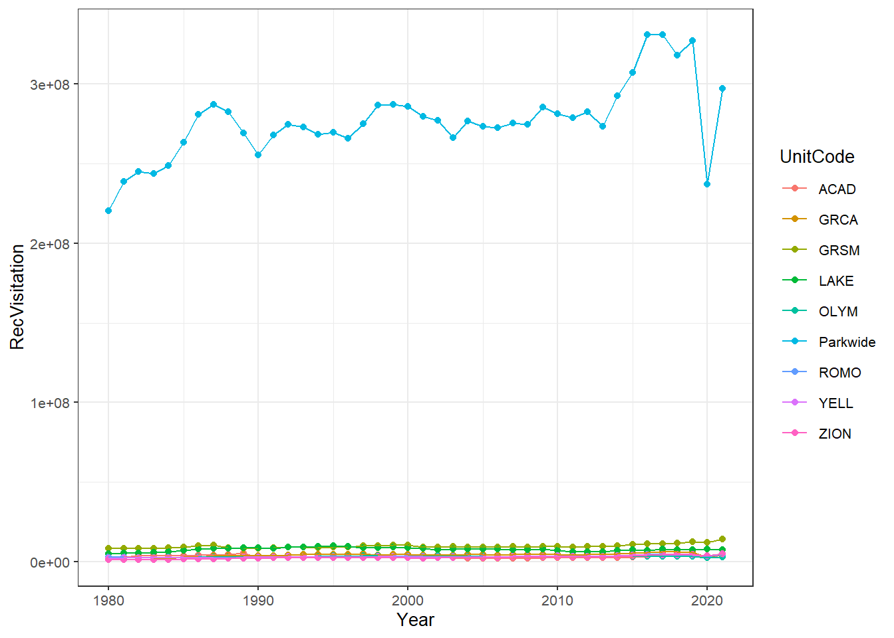
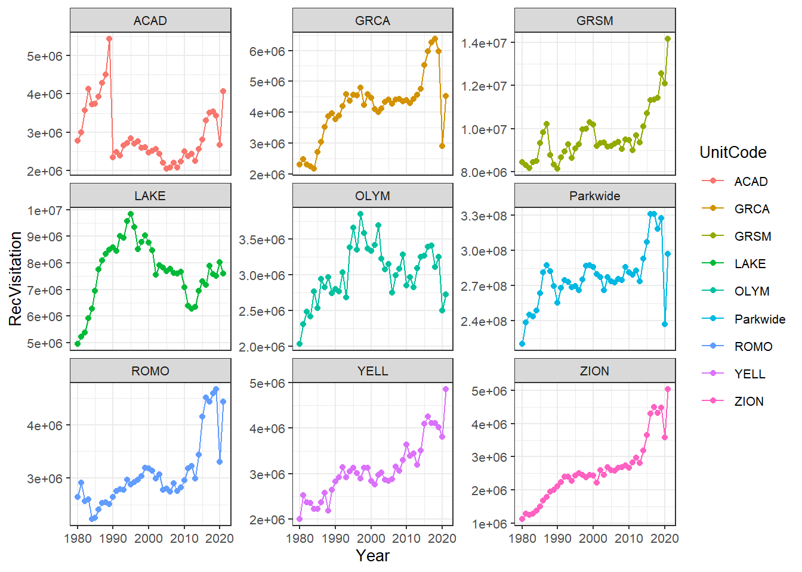

Chapter 2 Data Munging
2.0.1 Lesson Objectives
In the last lesson, we learned how to pull data from an API and reduce redundancies in our workflows through functions and iterations. In this lesson we will use the functions in the previous lesson to learn how to manipulate data frames with the tidyverse, and plot elegant time series graphs with the ggplot(), scales and plotly packages.
There are five exercises in this lesson that must be completed.
2.1 Pulling in necessary packages and data sets
library(tidyverse)
library(httr)
library(jsonlite)
library(plotly)
library(scales)Using the parkwide_visitation() function from the last lesson and mapping, let’s pull park-wide visitor data from 1980-2021, and name the final object parkwide. (Code hack: we can use 1980:2021 to create a vector of years so we don’t have to write each year out!)
parkwide_visitation <- function(year){
raw_data <- httr::GET(url =
paste0("https://irmaservices.nps.gov/v3/rest/stats/total/", year))
extracted_data <- httr::content(raw_data, as = "text", encoding = "UTF-8")
final_data <- jsonlite::fromJSON(extracted_data)
return(final_data)
}
years <- (1980:2021)
parkwide <- years %>%
map(~ parkwide_visitation(year = .)) %>%
bind_rows()2.1.1 Exercise #1
Using the unit_visitation() function from the last lesson and mapping, pull visitor data from 1980-2021 for the following park units: ROMO, ACAD, LAKE, YELL, GRCA, ZION, OLYM, and GRSM. Name the final output units.
parks2 <- c("ROMO", "ACAD", "LAKE", "YELL", "GRCA", "ZION", "OLYM", "GRSM")
output_2 <- parks2 %>%
map(~ unit_visitation2(., startYear = 1980, endYear = 2021))
units <- bind_rows(output_2)2.2 Exploring our data
Look at the data frame structure of parkwide and units; they’re exactly the same! So let’s go ahead and bind those together:
visitation <- bind_rows(parkwide, units)… except, the rows in parkwide’s UnitCode and UnitCode columns are empty. 😑 Let’s fix the UnitCode column to list “Parkwide” using mutate() and an ifelse() statement:
visitation <- visitation %>% mutate(UnitCode = ifelse(is.na(UnitCode), "Parkwide", UnitCode))Think of the above ifelse() operation as: “If the column UnitCode is NA, replace NA with Parkwide. Otherwise, preserve what is already in the UnitCode column.”
Now that we have a single data set containing all of the NPS visitation data that we’ve pulled, let’s start exploring it! But first, let’s aggregate the monthly data into annual data using group_by() and summarize():
yearly <- visitation %>%
group_by(UnitCode, Year) %>%
# we only care about recreational visitors:
summarize(RecVisitation = sum(RecreationVisitors))
yearly## # A tibble: 378 × 3
## # Groups: UnitCode [9]
## UnitCode Year RecVisitation
## <chr> <int> <int>
## 1 ACAD 1980 2779666
## 2 ACAD 1981 2997972
## 3 ACAD 1982 3572114
## 4 ACAD 1983 4124639
## 5 ACAD 1984 3734763
## 6 ACAD 1985 3745570
## 7 ACAD 1986 3929054
## 8 ACAD 1987 4288154
## 9 ACAD 1988 4502283
## 10 ACAD 1989 5440952
## # … with 368 more rowsWhat does visitation data look like through time? First we can try to graph all of the park units together:
ggplot(data=yearly)+
geom_point(aes(x = Year, y = RecVisitation, color = UnitCode)) +
geom_path(aes(x = Year, y = RecVisitation, color = UnitCode)) +
scale_y_continuous(labels = scales::label_scientific()) +
theme_bw(base_size=10)
… yikes, not surprisingly, parkwide visitation is wayyyy higher than our individual unit’s visitation data, making our graph pretty useless. It might be nice to have each park unit in a graph of its own.
We can create individual graphs for each unit using facet_wrap(), and set the y-axes for each plot to "free_y":
ggplot(data=yearly) +
geom_point(aes(x = Year, y = RecVisitation, color = UnitCode)) +
geom_path(aes(x = Year, y = RecVisitation, color = UnitCode)) +
scale_y_continuous(labels = scales::label_scientific()) +
facet_wrap(~UnitCode, scales = "free_y") +
theme_bw(base_size=10)
We can also make this plot interactive by feeding it into plotly’s ggplotly() function:
plotly::ggplotly(
ggplot(data=yearly) +
geom_point(aes(x = Year, y = RecVisitation, color = UnitCode)) +
geom_path(aes(x = Year, y = RecVisitation, color = UnitCode)) +
scale_y_continuous(labels = scales::label_scientific()) +
facet_wrap(~UnitCode, scales = "free_y") +
theme_bw(base_size=10)
)2.2.1 Exercise #2
Create an interactive graph with two separate panes: one showing park-wide visitation, the other showing all the individual park units together. Both panes should have different y-axes.
yearly_modified <- yearly
yearly_modified$parkwide <- yearly_modified$UnitCodeyearly_modified <- yearly_modified %>% mutate(parkwide = ifelse(parkwide == "Parkwide", "Parkwide", "Parks"))plotly::ggplotly(
ggplot(data = yearly_modified) +
geom_point(aes(x = Year, y = RecVisitation, color = UnitCode)) +
geom_path(aes(x = Year, y = RecVisitation, color = UnitCode)) +
scale_y_continuous(labels = scales::label_scientific()) +
facet_wrap (~parkwide, scales = "free_y"))It is pretty clear that some park units get orders of magnitude more visitors than others. But just how much of the total park visitation do each of these parks account for from year to year? Here we walk through two methods to tackle this question, pivoting and joining, to get park unit visitation side-by-side with park-wide data.
2.3 Pivoting
Currently, our yearly data is considered narrow because we have all of our NPS visitation data in one column, with multiple rows representing the same year. We can make this data wide by using the function pivot_wider()
wide_data <- yearly %>%
select(Year, UnitCode, RecVisitation) %>%
pivot_wider(., names_from = UnitCode, values_from = RecVisitation)… where names_from represents the column with the values you are hoping to spread into new columns, and values_from represents the data you want to fill these new columns with.
We can make the data set narrow again by using the function pivot_longer():
narrow_data <- wide_data %>%
pivot_longer(cols = -Year,
names_to = "Park",
values_to = "RecVisitation")… where cols are the columns we want to gather into one column (or, the column(s) you DON’T want to gather), while names_to and values_to are the names of the new columns produced from the pivot.
2.3.1 Exercise #3
Using wide_data as the starting point, create an interactive time series plot showing the annual percentage of the total visitation made up by all park units.
wide_data_percent <- wide_data %>%
mutate(ACAD = (ACAD/Parkwide) * 100) %>%
mutate(GRCA = (GRCA/Parkwide) * 100) %>%
mutate(GRSM = (GRSM/Parkwide) * 100) %>%
mutate(LAKE = (LAKE/Parkwide) * 100) %>%
mutate(OLYM = (OLYM/Parkwide) * 100) %>%
mutate(ROMO = (ROMO/Parkwide) * 100) %>%
mutate(YELL = (YELL/Parkwide) * 100) %>%
mutate(ZION = (ZION/Parkwide) * 100)2.3.1.0.0.1 I tried using a ‘for’ loop to accomplish this, but R disagreed.
wide_data_percent = subset(wide_data_percent, select = -(Parkwide))narrow_data_percent <- wide_data_percent %>%
pivot_longer(cols = -Year,
names_to = "Park",
values_to = "Percent")plotly::ggplotly(
ggplot(data = narrow_data_percent) +
geom_point(aes(x = Year, y = Percent, color = Park)) +
geom_path(aes(x = Year, y = Percent, color = Park)) +
facet_wrap (~Park, scales = "free_y"))2.4 Joining
Another way of getting park-wide visitation side-by-side with the park unit data is through the use of joining our original units and parkwide data sets:
joined_data <- inner_join(x = units, y = parkwide, by = c("Year","Month"))… where x and y are the two data sets you want joined, and by indicates the column(s) to match them by. Note: there are several ways of joining data. Explore them with ?`mutate-joins` and ?`filter-joins`.
2.4.1 Exercise #4
Using joined_data as the starting point, create an interactive time series plot showing the annual percentage of the total visitation made up by all park units. This plot should look nearly identical to the previous plot.
joined_data <- joined_data %>% mutate(UnitCode.y = "Parkwide")joined_data <- joined_data %>%
rename(UnitCode = UnitCode.x) %>%
rename(Parkwide = UnitCode.y) %>%
rename(RecreationVisitors = RecreationVisitors.x) %>%
rename(NationwideVisitors = RecreationVisitors.y)joined_yearly <- joined_data %>%
group_by(UnitCode, Year) %>%
summarize(NatVisitors = sum(NationwideVisitors), RecVisitors = sum(RecreationVisitors))joined_yearly$percentage <- (joined_yearly$RecVisitors/joined_yearly$NatVisitors)*100plotly::ggplotly(
ggplot(data = joined_yearly) +
geom_point(aes(x = Year, y = percentage, color = UnitCode)) +
geom_path(aes(x = Year, y = percentage, color = UnitCode)) +
facet_wrap (~UnitCode, scales = "free_y"))2.4.2 Exercise #5
Which park on average has the most visitation? Which park has the least visitation? Base your response on the data starting in 1990, ending in 2021. Defend your answer with numbers!
percentages <- wide_data_percent %>%
filter(Year >= 1990)colMeans(percentages)## Year ACAD GRCA GRSM LAKE OLYM ROMO YELL
## 2005.5000000 0.9297319 1.6090454 3.5046491 2.8391493 1.1190075 1.1427806 1.1720715
## ZION
## 1.0259186On average, Great Smokey Mountains National Park has the greatest visitation (3.5% of all visits), while Acadia National Park has the least (0.93% of all visits).